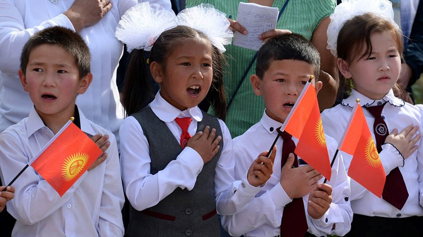

The basis for modern education in Kyrgyzstan is the Soviet system. After gaining independence, reforms were carried out in the field of education. School education is designed for 11 years, of which 9 are compulsory. Primary school - from 1 to 4 classes, children from 6-7 to 11 years old are studying. There are also preparatory zero classes. In elementary school, children are taught basic knowledge, such as writing, reading, learning languages, arithmetic, homeland studies, labor, ethics and physical education. Middle classes - from 5 to 9, children from 12 to 16 years old. In the middle classes, the study of scientific subjects, mathematics, information technology, in-depth study of foreign languages, and others begin. Senior classes - 10-11. Despite the fact that grades 10-11 are not compulsory, more than 80% of students study in the upper grades. Here, students continue to study the same subjects as in the middle classes, military science begins, as well as preparation for entering universities. At the end of the 11th grade, students take final exams and the All-Republican Testing (ORT), the results of which are recruited to universities.

In the early 1990s, gymnasium schools began to be created with in-depth study of individual subjects and specialties. In 2000, the number of public general education schools was 1975 schools. Currently, there are more than 2,000 of them. Private elite schools are opening in large cities. At the same time, a noticeable number of children aged 7-17 do not study - in 2013 there were 2,901 such people in the republic, of which 1,021 people worked [114] .
In 1990, there were only 9 universities in the republic, where 58.8 thousand students studied [115] . During the period of independence, the number of universities has increased dramatically and by the beginning of the 2010s reached 52, of which 36 are state-owned [115] . The number of students also increased and in the early 2010s amounted to about 220 thousand. [115] International “joint” universities operate in the republic: the Kyrgyz-Russian Slavic University , Manas and Alatoo , the American University of Central Asia [115] .